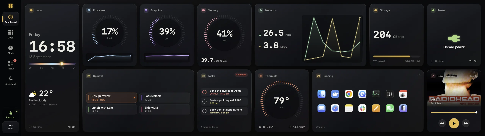
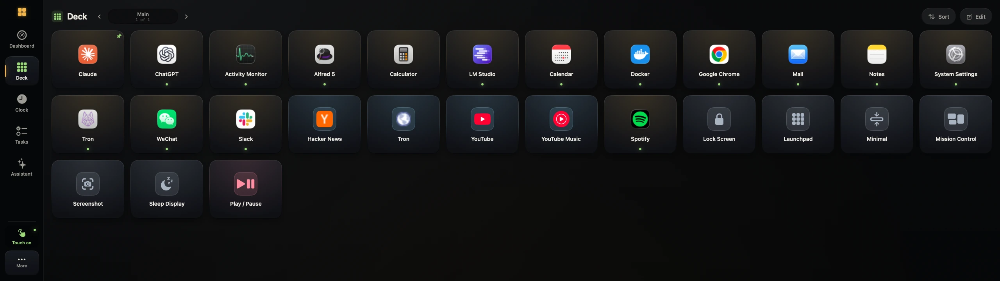
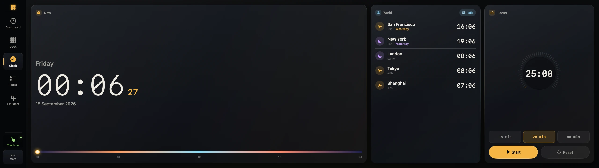
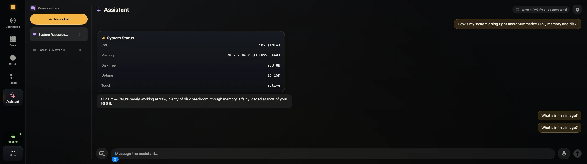
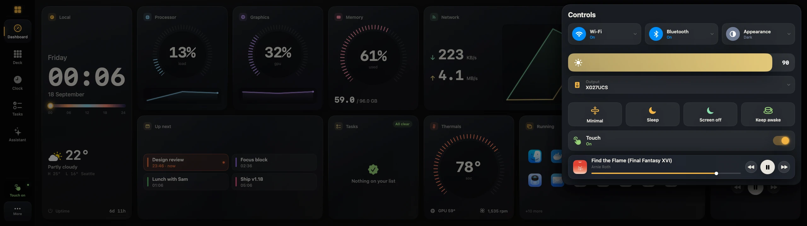
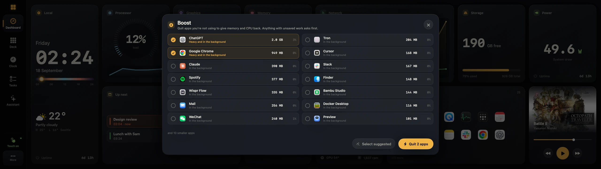

Your Mac, on the Edge.
Xeneon Toolbox turns Corsair's Xeneon Edge into a touch panel for your Mac: a dashboard, an app launcher and a set of controls, drawn for a 2560 × 720 strip.
Version 1.18.0. Free and open source. Needs macOS 14 or later.
Tap the screen. Scroll to move the camera.
Dashboard
Processor, memory, network, temperatures, weather, your calendar, your tasks and the song that's playing. Eighteen tiles to arrange on a two-row board, readable from across the desk.

Consoles
Tap any tile and it opens across the whole strip. Every processor core, what's filling memory, your network and its addresses, the next 24 hours of weather, today on a timeline. Quit a runaway app right from the list.
Deck
A launcher you set up with your thumb. Buttons open apps and sites, fire hotkeys, run shell commands or call a webhook, and you can chain several into one tap.

Clock
World clocks, a focus timer, and a bar that shows how far through the day you are.

Assistant
Ask by voice or keyboard. It opens apps, checks on the system, looks things up and sets reminders, and it asks before doing anything risky. Works with any OpenAI-compatible endpoint, including models running on your own Mac.

Control centre
Wi-Fi, Bluetooth, dark mode, brightness, sound output and playback, one swipe down from the top-right corner.

Boost
Shows which background apps are eating memory and quits the ones you pick. It doesn't pretend to clean your RAM.

A real touch driver.
No kernel extension.
macOS treats the Edge as a generic pointing device, so taps land in the wrong place. The Toolbox reads the touch controller directly. Taps land where your finger is, two fingers scroll and pinch, and swipes from the edges switch screens.
Lift your finger and the pointer returns to where you were working on the other display.
Gauges built from ticks
Forty-eight ticks across 270 degrees, drawn by the GPU. With every gauge live, the app uses under one percent of a core.
The rest of your day
Today's remaining events from Calendar, with the current one lit. Tap for the full agenda.
Every open app, one tap away
Tap an icon to bring that app forward. Press and hold to send its window to another display.
What's on
Artwork, scrubbing and transport for Spotify and Music. It listens for changes instead of polling.
Arrange it your way
Tiles come small, wide or tall. Press and hold the board to move, resize, remove or add them. The layout is saved.
A quiet clock for the hours
you're not looking.
Swipe down from the top and the strip dims to a clock with your next event, the weather and the music. Tap to wake it. Updates install while it's idle.
Set up in about a minute
- 1
Download it and drag it to Applications
It's a single app, notarized by Apple. Nothing runs as root.
- 2
Allow Input Monitoring and Accessibility
The app asks for both. If macOS doesn't show a prompt, it opens the right pane in System Settings and notices when you flip the switch.
- 3
Let it set the resolution
macOS usually picks a scaled mode for the Edge. One tap switches to the native 2560 × 720, and you can undo it.
Requires a Corsair Xeneon Edge and macOS 14 or later. Runs on Apple silicon and Intel.